- 00000018WIA305B7F20GYZ
- id_131064804.22
- Jul 28, 2025, 5:44:37 PM
Setting up and calibrating the Global Operator Cabinet (GOC) monitor
Set up and calibrate the monitor for your system.
Setting up and calibrating the NEC LCD monitor
Setting up the NEC LCD monitor
- Make sure that you have read and understood the electrical safety requirements before starting this procedure. See Electrical Safety.
- Shut down and power off the host computer. See Shutting down the host computer.
- Apply GOC LOTO. See Applying LOTO - Global Operator Cabinet (GOC) and Operator Workspace.
- Disconnect the DVI cable and the power cable from the LCD monitor, and remove the LCD monitor from the operator workspace table.
- Remove the new LCD monitor from its box and its packing, and set the LCD monitor on the operator workspace table.
- Connect the DVI-D and power cables to the LCD monitor.
Route these cables neatly to the back of the monitor base and the operator workspace.
Note For the DVI cable and power cable, reuse the cables originally connected to the LCD monitor.Figure 1. NEC LCD P242w cable connections 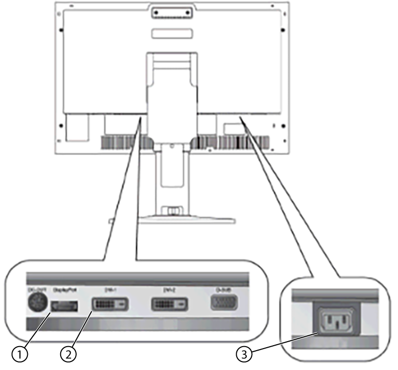
1 DisplayPort (For T5820 GOC) 2 DVI-D (For Other GOCs) 3 Power cable - Put the monitor no closer than 41 cm (16 inches) and no farther than 71 cm (28 inches) from the viewing position. The optimal distance is 61 cm (24 inches) for either of the monitors.
Calibrating the NEC LCD monitor
- Remove GOC LOTO. See Removing LOTO - Global Operator Cabinet (GOC) and Operator Workspace.
- Start up the host computer/system. See Starting up the host computer.
- Make sure the main LCD monitor power is on.
If LCD power is not on, press the Power On/Off button on the front panel (see below).
Figure 2. NEC front power button 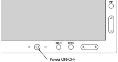
- Open Guided Install and select .
- Select LCD Monitor as the Display Type.
- Click Configure. Default gamma tables will be installed on the system.
- Select to close Guided Install.
Figure 3. System configuration panel - example 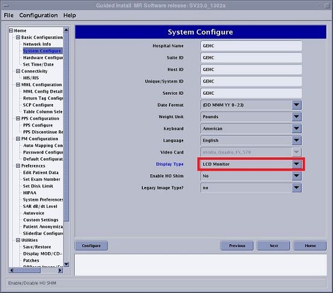
- Refer to the illustration and table below for information on control locations and functions.
Figure 4. Monitor component locations 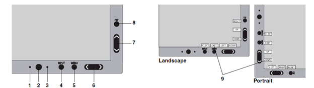
Table 1. Monitor component descriptions Item Component Description 1 Auto dimming sensor Detects the level of ambient lighting allowing the monitor to make adjustments to various settings resulting in a more comfortable viewing experience. Do not cover the sensor. 2 Power Turns the monitor on and off. 3 Power indicator LED Indicates that the power is on. Can be changed between blue and green in the Advanced OSD menu. 4 Input/Select Enters the OSD Control menu. Enters OSD sub menus. Changes the input source when not in the OSD Control menu. Hold the button to show USB selection menu when not in the OSD Control menu. Note This USB selection returns to the current setting by OSD menu when you change input signal or turn off the monitor.5 Menu/Exit Accesses the OSD menu. Exits the OSD sub menus. Exits the OSD Control menu. 6 Left/Right Navigates to the left or right through the OSD Control menu. You can adjust the brightness directly, while the OSD menu is off. The Left/Right and Up/Down buttons' functionality is interchangeable depending on the orientation (Landscape/Portrait) of the OSD.
When HotKey function is OFF, this function is disabled.
7 Up/Down Navigates up or down through the OSD Control menu. Shows the Picture Mode menu when not in the OSD Control menu. The Left/Right and Up/Down buttons' functionality is interchangeable depending on the orientation (Landscape/Portrait) of the OSD.
8 Reset/PIP Resets the OSD back to factory settings in the OSD control menu. PIP can be selected when the OSD is not showing. Hold the button to show ECO Mode menu while the OSD menu is off. Picture Mode menu. Press the Up/Down button to select Picture Mode. In PIP or Picture by Picture mode, Picture mode can be selected for main and sub window independently by pressing Left/Right button.
9 Key Guide The Key Guide appears on screen when the OSD control menu is accessed. The Key Guide rotates when the OSD control menu is rotated. - Set Picture Mode to FULL (4) using the following key entries:
- Menu
- Right arrow
- Right arrow
- Down arrow
- Left/Right arrow to set to FULL (4)
Figure 5. Setting Picture Mode to FULL 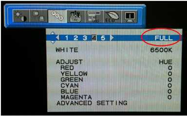
- Press MENU to exit.
- Set WHITE to 7500K .
Use the following key entries to access and change the value:
- Menu
- Right arrow
- Right arrow
- Down arrow
- Down arrow
- Left/Right arrow to set the value for your system.
Figure 6. Setting WHITE to 7500K 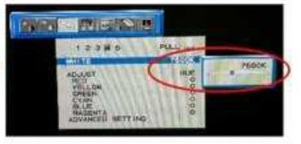
- Press MENU to exit.
- Set Brightness to 185 cd/m2 listed in the following table.
Use the following key entries to access and change the value:
- Menu
- Down arrow
- Left/Right arrow to set the value for your system.
Figure 7. Setting brightness 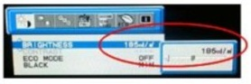
Setting up and calibrating the Eizo EV2430 24-inch monitor
Setting up the Eizo EV2430 24-inch monitor
- Make sure that you have read and understood the electrical safety requirements before starting this procedure. See Electrical Safety.
- Shut down and power off the host computer. See Shutting down the host computer.
- Apply GOC LOTO. See Applying LOTO - Global Operator Cabinet (GOC) and Operator Workspace.
- Remove the monitor from the box and set the monitor on the operator workspace table.Note Use the DVI-D cable for any system other than the Dell T5820. Any extra display cables can be disposed locally.
- Connect the DVI-D cable from the GOC to the DVI-D port on the monitor.
- Connect the power cables to the monitor.
- Route cables neatly to the back of the monitor base and the operator workspace.
Figure 8. Video cable connection – Eizo monitor 
Figure 9. Power cable connection – Eizo Monitor 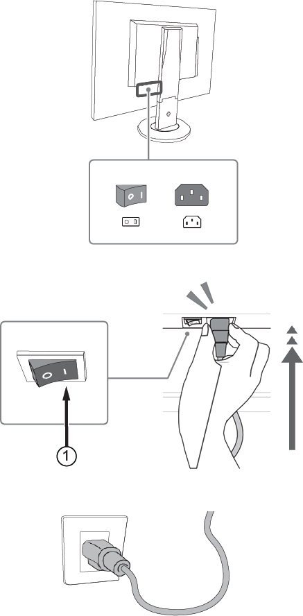
1 Factory preset is set to on. Note Make sure that only GE HealthCare product video hardware is connected to the GOC so that the software properly installs. - Turn on the monitor if not already on. Make sure that the main LCD monitor power is on. If not, press the Power On/Off button on the front panel.
- Put the monitor no closer than 41 cm (16 in) and no farther than 71 cm (28 in) from the eyes. The optimal distance is 61 cm (24 in) for either of the monitors.Note Allow the monitor to warm up for 20 minutes before doing any adjustments.
- Start up the GOC and log on as root.Note It is possible that the customer changed the default password. If you cannot log on, contact the customer for the correct password.
- Open Guided Install and select .
- Refer to the figure below and do the following:
- Make sure the correct video card is selected.
- If not, choose the correct video card model from the Video Card menu.
- If the correct video card is not listed, make sure the most recent MrApps software and Service Packs are loaded.
- Select LCD Monitor - Other as the Display Type.
- If this option is not available, use NEC LCD2490WUXi2.
Figure 10. System configuration panel – example - Make sure the correct video card is selected.
- Click Configure. Default gamma tables will be installed on the system.
- When complete, exit Guided Install and restart the system.
- Log on as root.Note It is possible that the customer changed the default password. If you cannot log on, contact the customer for the correct password.
- Adjust the monitor to customer preference. For details and recommended settings see LCD Monitor Screen Adjustments.
Setting up the Eizo EV2430 24-inch monitor with Dell T5820 workstation
- Make sure that you have read and understood the electrical safety requirements before starting this procedure. See Electrical Safety.
- Shut down and power off the host computer. See Shutting down the host computer.
- Apply GOC LOTO. See Applying LOTO - Global Operator Cabinet (GOC) and Operator Workspace.
- Remove the new monitor from its packing box and set the monitor on the operator workspace table.
- Connect the DisplayPort cable to the mini-DisplayPort and DisplayPort adapter.
- Connect the DisplayPort cable to the GOC and to the monitor's DisplayPort.
Figure 11. Dell T5820 cable configuration 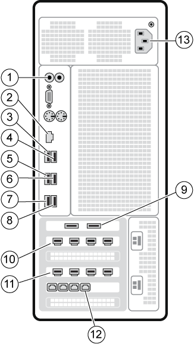
Table 2. Dell T5820 cable configuration Item Run # Description 1 NA Line In/Out cable to GOCAA J12/14 2 NA Site network Ethernet cable 3 NA Mouse USB cable 4 E3048 Keyboard USB extender cable to keyboard USB cable 5 E3037 ICE USB extender cable 6 NA USB-RS422 Converter USB cable to USB-RS422 Converter 7 NA (For 12.1 inch IRD) IRDC USB cable to IRDC J1 (For 15.6 inch IRD) NA
8 (For 12.1 inch IRD) NA (For 15.6 inch IRD) P2026
(For 12.1 inch IRD) NA (For 15.6 inch IRD) AOC cable harness, USB 3.0 connector, to IRD J4
9 NA NA 10 (For 12.1 inch IRD) NA (For 15.6 inch IRD) P2026
(For 12.1 inch IRD) IRDC mini DP cable to IRDC J2 (For 15.6 inch IRD) AOC cable harness, DisplayPort (DP) connector (attached to the Dell T5820 with a mini DP to DP dongle), to IRD J3
11 E3046 Host LCD Monitor mini DP cable to Host LCD Monitor 12 E3011 ETH1 (right port) cable to PGR J2 Note Depending on the Dell T5820 installed, slot 5 may have four or two Network Interface Card (NIC) ports. The Ethernet is connected to the rightmost port in both configurations (when facing the back of the Dell T5820).13 NA Power cable 14 EP3007 Ethernet cable to PET PROP Note Depending on the Dell T5820 installed, slot 5 may have four or two Network Interface Card (NIC) ports. Make sure cables are connected to the correct ports. - Route cables neatly to the back of the monitor base and the operator workspace.
Figure 12. Video cable connection – Eizo monitor Figure 13. Power cable connection – Eizo Monitor 1 Factory preset is set to on. Note Make sure that only GE HealthCare product video hardware is connected to the GOC so that the software properly installs. - Turn on the monitor if not already on. Make sure that the main LCD monitor power is on. If not, press the Power On/Off button on the front panel.
- Put the monitor no closer than 41 cm (16 in) and no farther than 71 cm (28 in) from the eyes. The optimal distance is 61 cm (24 in) for either of the monitors.Note Allow the monitor to warm up for 20 minutes before doing any adjustments.
- Start up the GOC and log on as root.Note It is possible that the customer changed the default password. If you cannot log on, contact the customer for the correct password.
- Open Guided Install and select .
- Refer to the figure below and do the following:
- Make sure the correct video card is selected.
- If not, choose the correct video card model from the Video Card menu.
- If the correct video card is not listed, make sure the most recent MrApps software and Service Packs are loaded.
- Select LCD Monitor - Other as the Display Type.
- If this option is not available, use NEC LCD2490WUXi2.
Figure 14. System configuration panel – example - Make sure the correct video card is selected.
- Click Configure. Default gamma tables will be installed on the system.
- When complete, exit Guided Install and restart the system.
- Log on as root.Note It is possible that the customer changed the default password. If you cannot log on, contact the customer for the correct password.
- Adjust the monitor to customer preference. For details and recommended settings see LCD Monitor Screen Adjustments.
Calibrating the Eizo EV2430 24-inch monitor
Follow the directions below to calibrate the Eizo EV2430 24-inch monitor.
- Remove GOC LOTO. See Removing LOTO - Global Operator Cabinet (GOC) and Operator Workspace.
- Start up the host computer/system. See Starting up the host computer.
- Refer to the figure and table below for locations and descriptions of the Eizo monitor controls.
Figure 15. Front panel controls 
1 EcoView sense sensor Detects movement of a person in front of the monitor 2 Ambient light sensor Detects ambient brightness 3  button
buttonShows the power saving setting menu 4 SIGNAL button Switches input signals for display 5 MODE button Switches the color mode 6 ENTER button Shows the Settings menu, selects an item on the menu, and saves. 7 ▲ / [Volume icon] , ▼/ [Brightness icon] - Controls navigation and adjusts settings
- ▲ / [Volume icon]: Shows the volume adjustment menu
- ▼ / [Brightness icon]: Shows the brightness adjustment menu
8  button
buttonTurns power on or off 9 Power indicator Indicates monitor's operation status - White: Operating
- Orange: Power saving mode
- Off
Figure 16. Rear panel controls 
10 Main power switch Turns the main power on ( | ) or off ( O ) 11 Power connector Connects the power cord 12 Input signal connector Left: DisplayPort
Center: DVI-D
Right: D-Sub mini 15-pin
13 Security lock slot Complies with Kensington’s MicroSaver security system 14 Speaker Outputs audio 15 Handle Handle used for transportation 16 USB downstream port Connects a peripheral USB device 17 USB upstream port Connects the USB cable for using the USB Hub function 18 Headphone jack Connects the headphones 19 Analog audio input connector Outputs external audio from the monitor 20 Stand Adjusts the height and angle (tilt and swivel) of the monitor 21 Cable holder Manages cables - Show the settings menu.
- Press Enter to show the settings menu.
Figure 17. Settings menu 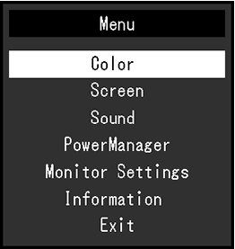
Note Default display settings for Eizo EV2430:Color sRGB Color Temperature 6500K Display Transfer function Gamma2.2 Brightness Preset at 80% - Press Enter to show the settings menu.
- Adjust settings.
- Select a setting to adjust with ▲▼ and then press Enter. The setting submenu opens.
Figure 18. Color setting submenu 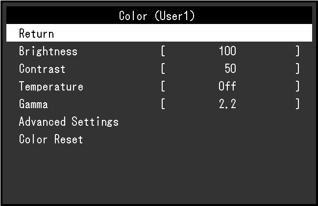
- On the submenu, select a setting to adjust with ▲▼ and then press Enter. The adjustment menu opens.
Figure 19. Adjustment menu 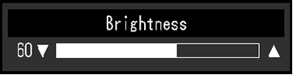
- Use ▲▼ to adjust settings as needed and then press Enter to set.
- Select a setting to adjust with ▲▼ and then press Enter. The setting submenu opens.
- Exit menu.
- Select Return from the submenu and then press Enter.
- Select Exit and then press Enter.
Finalization
- Do a check scan to make sure the system is working properly. See MR and PET Hello-Goodbye Scan.
- If the system has a camera and the customer wants to match the camera image to the new monitor image, the customer must notify the camera vendor that a new monitor type has been installed and camera adjustments are required.